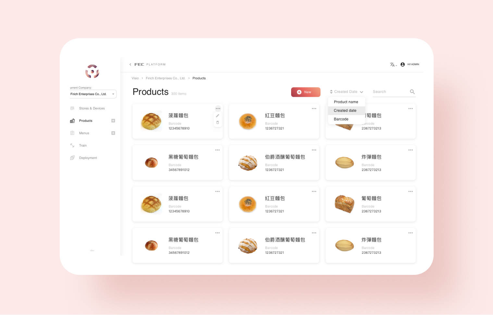
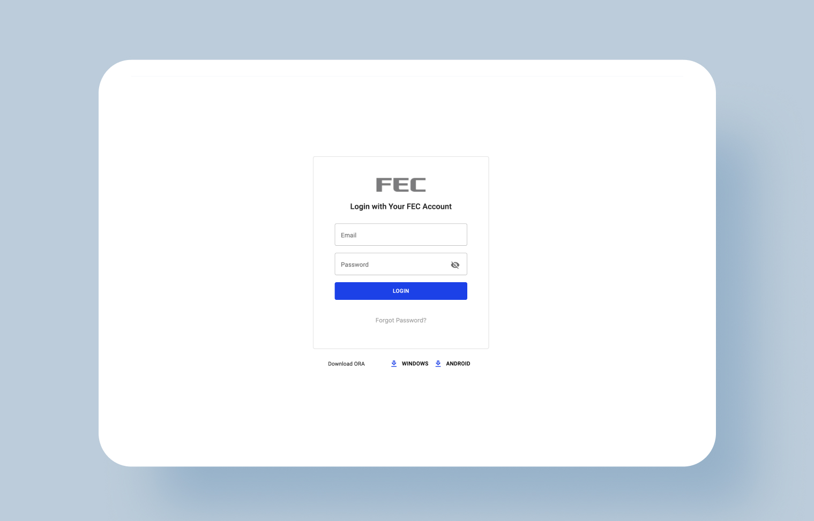
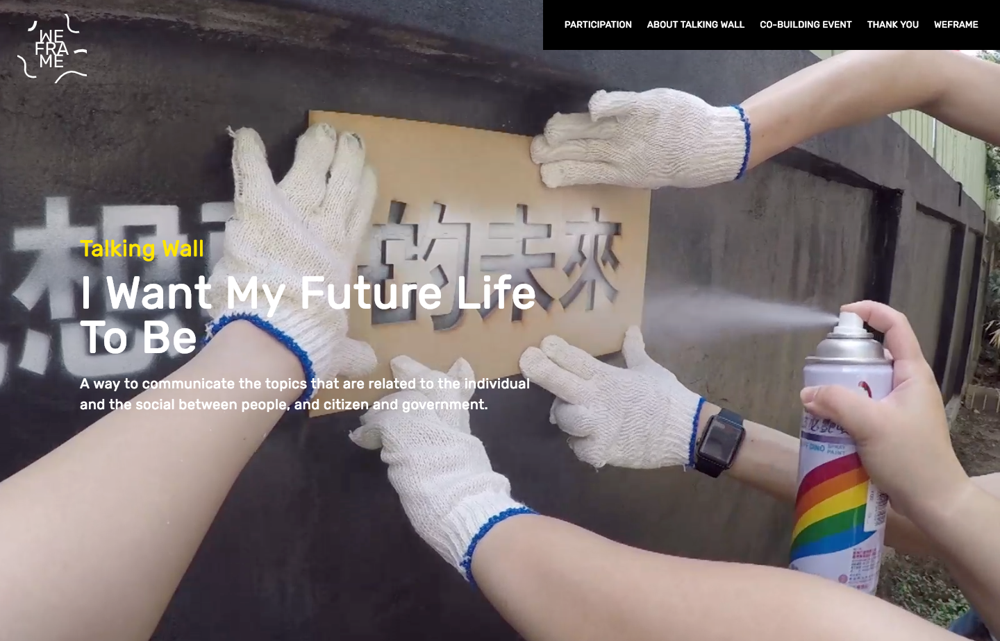
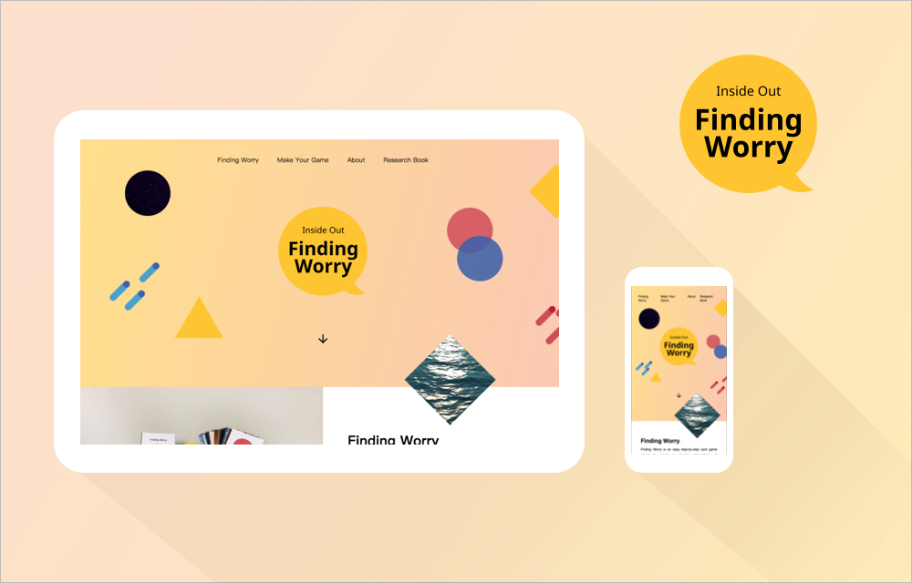
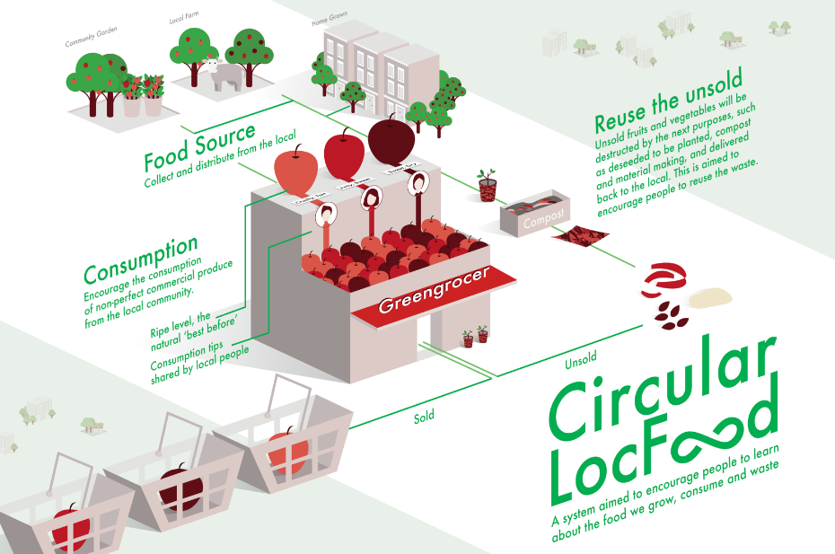

Hi, Welcome! I am a design-focused UI Frontend Developer experienced in ReactJS and Vue.js, who obsessed with designing and coding a better information-sharing world. Also I value the positive transformative impact of social design and always bring active and humble attitude for better understanding.
-
Jan, 2023 UI/UX Design, VueJs Frontend Development Chapter 2 Selection Chapter 2 Selection is a second-hand online bookstore focusing on mental health issues.
-

Oct, 2021 UI/UX Design, ReactJS Frontend Development Visio Visio is an object recognition platform for retail industry to manage and train their menus by the automatic recognition labelling.
-
May, 2021 UI/UX Design, ReactJS Frontend Development Nubis Nubis is a global POS device management platform with multi-language translations using i18n. Design to make the devices control and management more easily with grouping and delegation functions.
-

Feb, 2021 UI/UX Design, ReactJS Frontend Development FEC Platform FEC Platform is a software web application. It allows authorized users to manage accounts and permissions, POS device delegation, and subscribe services.
-

Dec, 2020 UI/UX Design, ReactJS Frontend Development 10/10 Psychological Clinic 10/10 Psychological Clinic offical website is well-reputed with its calming design system and well-organised booking form.
-

Dec, 2018 Design Research, Social Design Weframe - Talking Wall Talking Wall - I Want My Future Life To Be is a social reframing project by collaboratively creating the communication system between people, citizen and government.
-

Jul, 2018 Visual Design, RWD Inside Out - Finding Worry The project is aimed to intervent the accumlated low mood and encourage people to talk about the negative emotions.
-

Oct, 2017 UI 100% Citizen APP An APP aimed to optimise the effective communication between policy-makers and citizens.
-

Ongoing Project Service Design, Graphic Design Book Sharing Book Sharing is an online and offline service to create interaction between people by sharing second hand books.
-

Ongoing Project Social Design, Graphic Design Her Barking Her Barking is a women-led project aimed to improve the safety and perceptions in Barking.
-

Jan, 2019 Social Design, Graphic Design Hackney Community Parklets Cycle Route Map Design A cycle route map shows the community parklets that shifts the urban transportation mode in Hackney.
-

Dec, 2018 Design Research, Social Design Weframe - Talking Wall Talking Wall - I Want My Future Life To Be is a social reframing project by collaboratively creating the communication system between people, citizen and government.
-

Jun, 2018 Design Research, Social Design Circular LocFood System This is a future city project aimed to reframe the urban food consumption. A circular system is created to optimise the possiblility of sustainability of daily food consumption.
-

Feb, 2018 Design Research, Social Design Inside Out The project is aimed to intervent the accumlated low mood by providing an accessible card game at park, encouraging people to talk about the negative emotions in a safe, relaxing atmosphere.
Let's make something great!
As a UI/UX Frontend Developer
'One of the things I admire most about Man Ping is her ability to take complex problems and develop creative and elegant solutions. She is a true professional and always meets deadlines, even when faced with tight timelines.'
Rupert Smith - CEO & Founder, Tuck Trucks, London
As an Employed Senior Designer
'During my 18 months of working with Man-Ping, I saw a young lady who actively built up experiences and abilities in preparation for the future. Within a short period time, she proved that her passion and persistent self-discipline could exceed those of people with seniority.'
Paul Hung - Executive Creative Director, Wunderman, Taiwan
As a Freelancing Web Designer
'Manping gave us suggestions from different perspectives in a timely manner. Instead of thinking from the perspective of a designer, some of her suggestions were based on the thoughts of Internet users or readers. Her works were always beyond my imagination and very impressive.'
Alice Cheng - Senior Account Planner, Sanlih E-Television, Taiwan